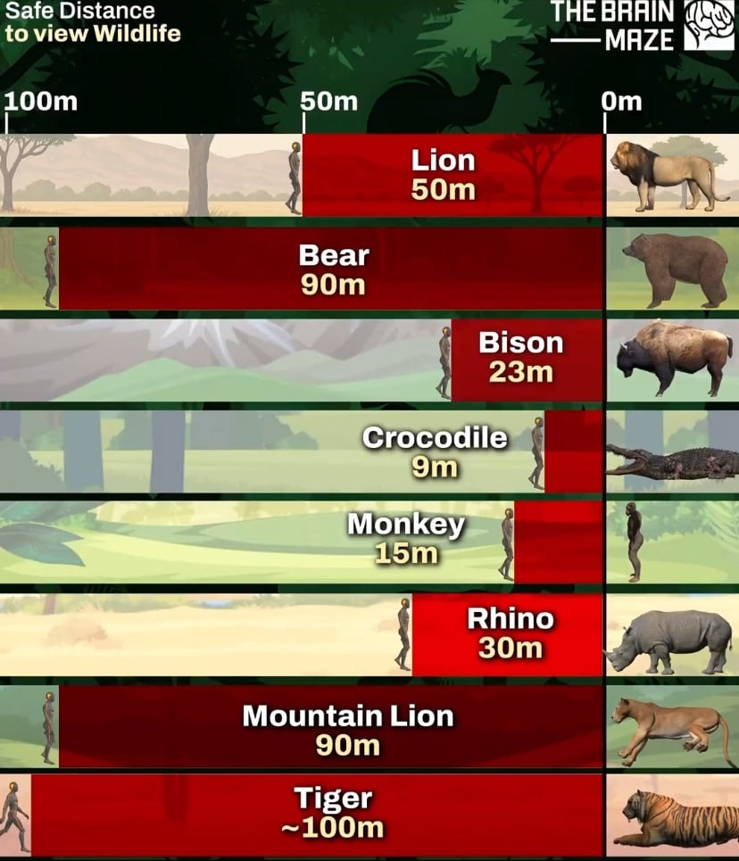

야생동물별 권장 안전거리.jpg
댓글
아님
내가 산에 갔는데 그산에 호랑이산단 소리들렸으면 이미 늦은거임
아님
산에 갔어? 그럼 죽어.

그곳이 터져 죽습니다 ㄷㄷ
호랑이가 무서운 점은 소리만 들리고 어디있는지 도통 보이지가 않는 점이지
저렇게 위험한 곰은 대체 왜 지리산에 풀어두는거야..
느슨해진 지리산에 긴장감을 주기 위해서
환경부 :
반달곰은 성격이 온순해 사람을 먼저 공격하지 않고!
과거 지리산에 수백 마리가 서식했을 때에도 곰이 먼저 사람을 공격했다는 공식보고가 없었고!!
1천300∼2천500마리가 서식하는 일본 나가노현에서도 73∼89년 수십 건의 피해사례가 있긴 했지만 인명 사망 사례는 없었다구욧!!!!!
반달곰은 불곰처럼 난폭하지않고 온순해서 괜찮다구욧!!
(실제로한말)
윙슈트는 부상율이 낮은 안전한 스포츠입니다.
아 천마리 넘지 않으면 안전하구나 더 나둬도 되겠네
왜 89년에 끊었냐하면 90년대부터 농촌 인구감소로 곰이 마을 주변까지 내려오기 시작 인명사고가 나기 시작해서 오히려 불곰은 사람들이 많이 안사는 북해도에만 살아서 피해가 덜하고 대부분의 곰 피해는 혼슈지역 한국보다 더 작은 반달곰이 일으키는데 말이죠
https://m.segye.com/ampView/20250910521719
??? : 우리 곰은 안찢어요
자연스럽게 자연산 반달곰 헌팅 시즌 만들어서 스포츠 할라고
사자 안전거리가 50m정도밖에 안된다고??? 걍 시야 안에 보이면 안될것 같은데
생각보다 착한듯?
착한게 아니라 먹이로 생각하는게 아닌거 아님?
슈퍼가면 쳐다도 안보는 쌀과자가
나한테 포장지 싹 까고 다가오시면 옴뇸뇸 해드려야지 뭐
마운틴라이언이 뭔가 했는디 퓨마네
악어 ㅈ밥쉑
사자가 고양이중에서도 독보적인 조루네
역시 호랑이햄이 최고시다 사자는 ㅈ밥이네
~100m는 100미터 안으로 들어오라는거잖아
아직 우리나라는 반달가슴곰에 의한 인명피해가 간접적이지만 있네..?
그래도 개체가 늘어나는 만큼 대책이 필요할듯
코뿔소도 성깔 엄청 더러워 보여서 저거보다 멀리 떨어져야 할 거 같은데 의외네
코뿔소 시력이 존나 안좋아서 그런듯?
아하 멀리 보질 못해서 그렇구나 ㅋㅋ 알려줘서 고마워
저 안전거리라는게 저정도 거리에 있으면 동물들이 사람 잡으러 오지 않는다는 거리인거지?
ㄴㄴ 저정도면 도망가더라도 살확률이 높은 거리
아닌거같은데 50미터만 떨어져있으면 도망쳐서 사자한테서 살 수 있다고?
호냥이랑 100미터 넘게 떨어져있더라도 호냥이가 쫒아오면 금방 잡혀서 간식될거같은데..
ㅅㅂ 반달곰 좀 동물원에 가둬라 또 사람 죽고 가둘려고
호랑이가 사자보다 달리기 빠른가보네
가까우면 가까울수록 샷건 파워가 쎄지는법
호랑이가 눈에 보인다면 이미 늦은거로군